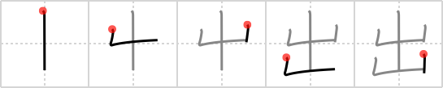

出
← →
exit

Reading:
On-Yomi: シュツ、スイ — Kun-Yomi: で.る、-で、だ.す、-だ.す、い.でる、い.だす
Heisig story:
The kanji for exit pictures a series of mountain peaks coming out of the earth. Learn it together with the following frame.
Koohii stories:
1) [DrJones] 4-1-2008(141): Suddenly, a cactus comes out of the ground with a sign that reads: exit. Now you can leave the desert! (Note: giving this primitive the meaning 'cactus' can be useful later).
2) [theBryan] 19-7-2008(63): The exit lays between these two mountains.
3) [decamer0n] 8-2-2007(19): A mountain chain blocked our exit from Mordor.
4) [andresito] 7-5-2009(7): Imagine Gollum from LOTR telling you the way to get out from Mordor; the exit is behind the stacked mountains.
5) [okamix2] 5-2-2009(7): The two mountains one on top of the other, point to the only exit from Earth.